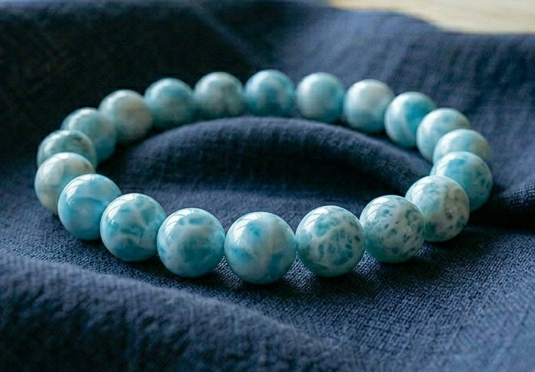

仁美様
詳細のご希望、ありがとうございます。
仁美様のために選んだ石について、
詳しくお伝えしますね。
仁美様の命の流れを視させていただき、
今の仁美様に最も必要な石を3つ選びました。
仁美様は、井戸の奥で静かに湧き続ける水のように、
表には出さずに、心の真ん中で深く感じ取り、
形にされる前のものを育てる、
そういう繊細で深い力を持つ方です。
あの方の小さな言葉の選び方や、
気配のわずかな温度の変化を、
他の人の何倍も深く受け取れる方。
でも──
「本当はもっと近づきたいのに」
「言葉にしてしまいたいのに」と、
言葉にならなかった想いを
内側に溜め込んでしまう感覚が
繰り返されやすい流れがあります。
2027年2月に向けて、
仁美様とあの方の真ん中に
罔象女神の水の力が
最も深く流れ込む流れが
すでに動き始めています。
その流れを最大限に活かすために、
仁美様のエネルギーと
罔象女神（みつはのめのかみ）が
深く共鳴する3つの石を選びました。

海の底の青をそのまま閉じ込めたような
透明な水色の石です。
仁美様の「静かに湧く水」のエネルギーと
最も深く共鳴します。
罔象女神の水の流れと同じ清らかさが、
仁美様の中に溜まっていた
言葉にされなかった想いを、
そっと浄化してくれます。
仁美様の「想いを内側に溜め続けてしまう」感覚を、
この石がそっと緩めてくれます。

罔象女神と最も共鳴が強い石です。
月の光をそのまま閉じ込めたような
白くやさしい輝きで、
言葉にされる前のものを
正しく受け取る力を高めてくれます。
仁美様の命の流れには、
「内側に眠る気高い月の輝きを、
そのままの形で表に届ける」という運びが
刻まれています。
ムーンストーンは、その守護を日常の中で
ずっとそばに置いておける石です。
ご自身の中の気品が少しずつ表に届き始め、
「私なんて」と一歩後ろに置く癖が、
ゆっくりほどけていきます。

カリブの海の色を封じ込めたような
やわらかい水色の石です。
仁美様が「一方通行かもしれない」
「言葉にしてしまいたい」と
内側でぶつかりを感じるとき、
この石が、そのループを静かにほどいてくれます。
待ち続けてしまう流れを止めるのではなく、
それを「自分で静かに選び取る方向」へと
整えてくれる石です。
アクアマリン・ムーンストーン・ラリマー。
この3つを仁美様専用に組み合わせて、
一つひとつ手作りで仕上げます。
罔象女神への祈祷とエネルギーチャージを込めて、
仁美様のもとへお届けします。
身につけていくうちに、
「形がなくても繋がっている」
「言葉にしなくても大丈夫」という感覚が
少しずつ戻ってきます。
確かめてしまいたくなる夜、
言葉にしてしまいたくなる衝動。
そういう揺らぎのとき、
石が静かにそのループをほどいてくれる。
日常の中で、守護がそばにある。
そして2027年2月に向けて──
あの方の内側で言葉にならない想いが
ふっと形を取り始めるその瞬間に、
エネルギーが整った状態で
臨めるようになります。
仁美様の場合、
2026年12月から、
あの方からこれまでとは違う温度の
気配が届き始める流れがあります。
パワーストーンのエネルギーが
しっかりと馴染むまでには、
通常2〜3週間ほどかかります。
今から始めることで、
ちょうど2026年12月の
気配が動き始める時期に
エネルギーが整った状態になります。
そして2027年2月、
罔象女神の力が最も深く流れ込む月に、
仁美様の魂に守護が
深く根を下ろした状態で迎えていただけます。
- ご注文から7〜10日以内に発送
- 追跡番号付きで安心
- 専用の浄化・エネルギーチャージ済みでお届けします
今回ご購入いただいた方には：
- パワーストーンの取扱い・浄化方法のご案内
- ご購入から3ヶ月間、気になることがあればいつでもご相談いただけます
ご希望の方は、下のボタンよりお進みください。
ブレスレットを希望する
※ 別ウィンドウで購入ページが開きます
ご不明な点があれば、
お気軽にお尋ねくださいね。
仁美様が、ご自身の内側で
「この静かなご縁を選び取る」と
決めたその瞬間から、
あの方の魂もまた、
言葉にされない形で
仁美様のほうへ動き始めます。
どうか、待つのではなく
ご自身の手で、静かに選び取ってくださいね。